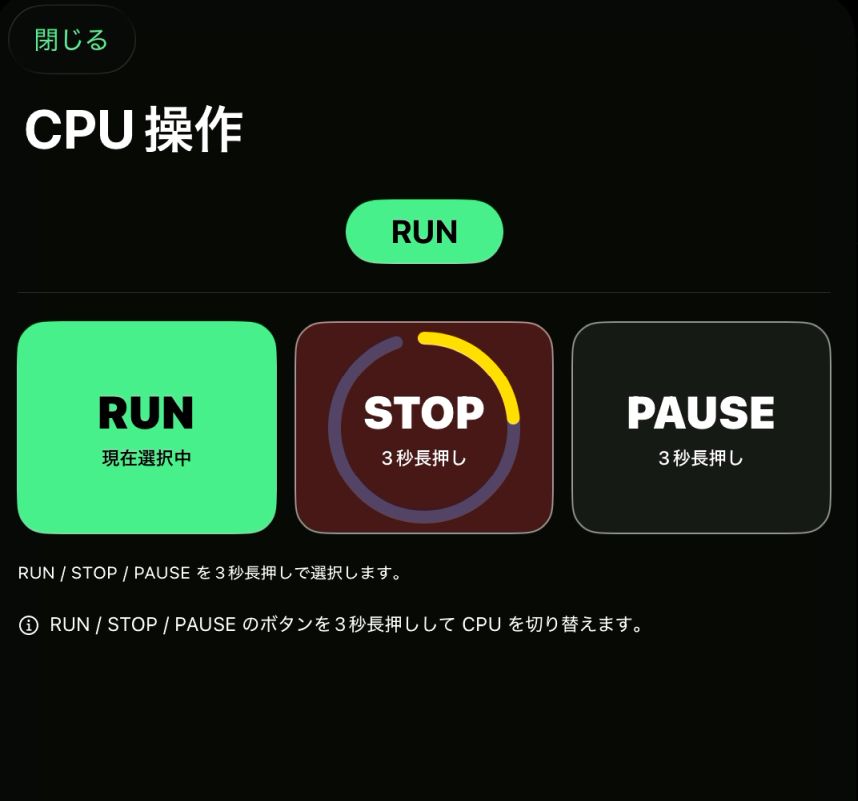

MELSEC
RUN、STOP、PAUSE を操作できます。
CPU Control
CPU状態の変更を PLC に送信します。実設備へ影響するため、対象 PLC と設備状態を確認してから実行してください。

対象 PLC、実行する操作、設備の状態が正しいことを確認してください。
RUN、STOP、PAUSE を操作できます。
RUN と PROGRAM を操作できます。
出力デバイスを操作する場合は、CPU を MELSEC では PAUSE、KEYENCE では PROGRAM 状態に変更してから書込してください。
MELSEC では STOP 状態だとリモート I/O へ出力が転送されないため、プログラムだけを停止させる PAUSE を使用してください。
CPU操作に失敗した場合は、接続状態、対象 PLC、選択した操作、エラー履歴を確認してください。